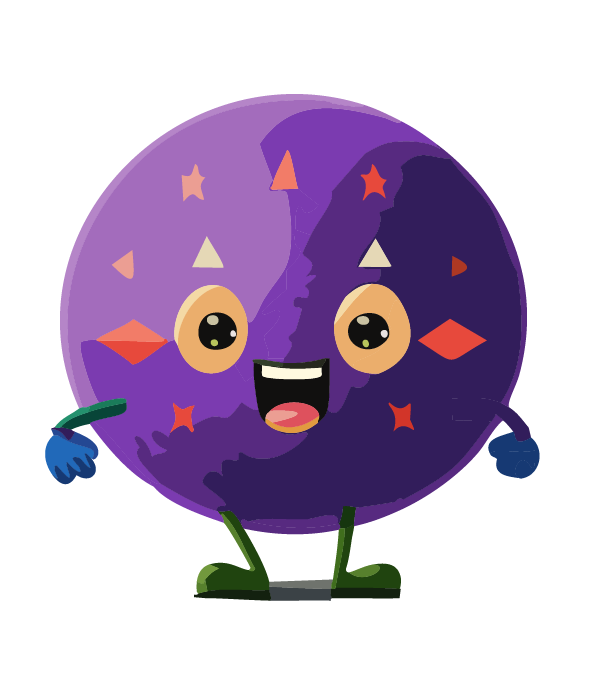
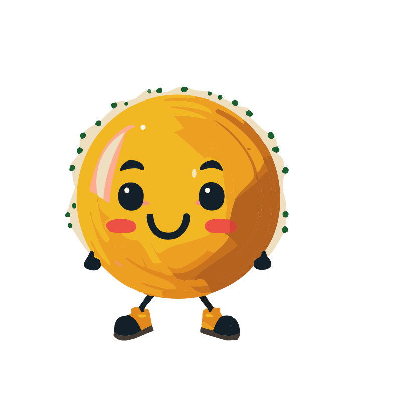
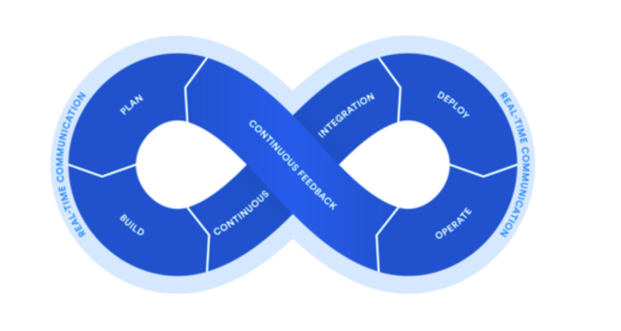
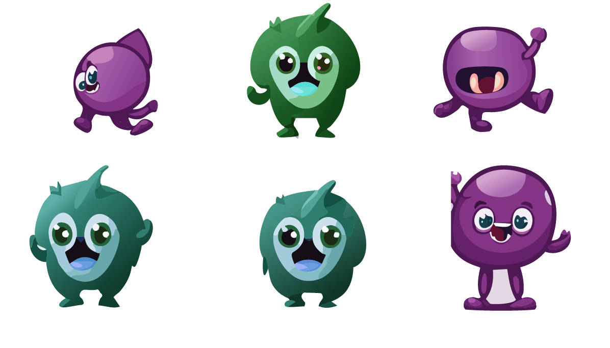
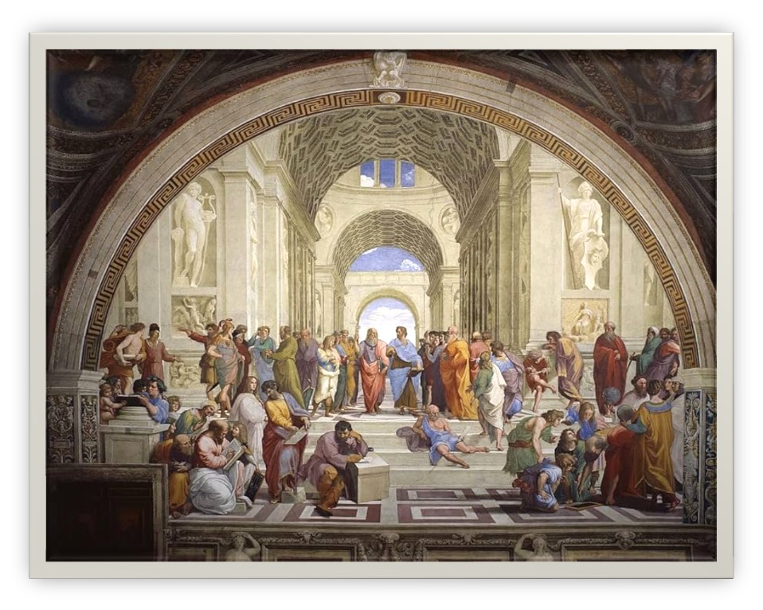

Exposure on Time:
Deploying exposure models in a timely manner
About Us: {SET}group
- Spatiotemporal Exposure Mapping
- Chemical and Stressor Mixtures Prediction
- Mechanistically Informed Risk Assessment
About Us: {SET}group

Eva Marques
Daniel Zilber
Ranadeep Daw
Mariana Alifa
Insang Song
Kyle Messier
Mitchell Manware

Back Story
Back Story


Back Story
Kyle
CEHD Attendees
Cavin
Back Story
Much discussion: “integration … models … privacy”
Back Story
There are so many PM2.5 models, why do we need another one?
Back Story
Actually…
Back Story
I’ve had a difficult time finding air pollution models that are available during the same time range as our EHR data
Back Story
Interesting … I’ll look into developing a PM2.5 model for recent years
Back Story
A couple months later …
Back Story
I have new group of postdocs and data analysts joining and am worried about how to keep track of their code and knowledge retention
Back Story
I have new group of postdocs and data analysts joining and am worried about how to keep track of their code and knowledge retention
Back Story
30 hours of NIH sponsored project management
- Project and Portfolio management approaches
- Task management through tools like Kanban boards
- Agile project management
Back Story
- Agile \(||\) CI/CD

Back Story
 SET group!
Back Story
We discuss the idea of a group project focused the development of an air pollution model with regular updates using TDD and CI/CD principles
Sounds good to us!
Back Story
Group project using TDD and CI/CD principles
Awesome!
Software and Computational Best Practices
- Test Driven Development
- Continuous Integration
- Build Checks
- Style/Linting
- Workflows/Pipelines
Some Geospatial Models From Me
That are not FAIR+
- Arsenic in North Carolina
- Tetrachloroethylene in North Carolina
- Nitrate in North Carolina
- Radon in North Carolina
- Nitrogen Dioxide in the US
- Mobile monitoring NO, PM, and BC in the Bay Area
- Kind of FAIR+
- Raw data is available for research
- Modeled data is not readily usable for epidemiology
Others making exposure data accessible
Perhaps not perfect, but better than most
- ACAG
Others making exposure data accessible
Perhaps not perfect, but better than most
- NASA
Others making exposure data accessible
Perhaps not perfect, but better than most
- NASA
Others making exposure data accessible
Perhaps not perfect, but better than most
- Microsoft Planetary Computer
Others making exposure data accessible
Perhaps not perfect, but better than most
- OpenAQ

Others making exposure data accessible
- For the most part, these are data catalogs
- Spatial and temporal domains can be limited
- Still require a heavy lift on the health researcher to integrate
SET Group Group Project Intro
- Goal: Develop an air pollution model for the last 5 years that is updated bi-annually
- Entire SET group, Cavin Ward-Caviness, Lara Clark, Anisha Singh
- Test-Driven Development
- GitHub with strict rules
- Targets make-like pipeline
- Fine spatial and temporal resolution
- Post-processing for aggregated spatial and temporal resolutions
TDD and Test Coverage
- Unit tests: Test a function or very specific piece of code e.g.
- Does my function return an error when the input is wrong?
- Does function return the expected value given a set of inputs?
- expect_*
- Integration tests: Tests the input from function X works with function Y
- See testthat R package
TDD Philosophy

- Write a test
- Run the test -> Expect it to fail
- Write the minimum code
- Run the test -> Till it passes
- Refactor -> Repeat -> Complete
TDD Philosophy
- Forces you to think about code requirements
- Forces explicit testing of code
- Minimizes bugs
CI/CD
- Frequent code commits
- Detect Errors Sooner
- Reduces Complexity of Debugging
- Run Code Tests Automatically
- Make Working in Groups Easier
Style/Linting
- Consistent style –> rEdabIliTY and_maintainability
- Identifying syn.tax errors;
- Semantic Errors
Pipelines and Workflows
- A pipeline is a computational workflow that does statistics, analytics, or data science
- Coordinate analysis with a DAG like structure
- Skip steps that are not needed with updates
- Facilitates code and package integration